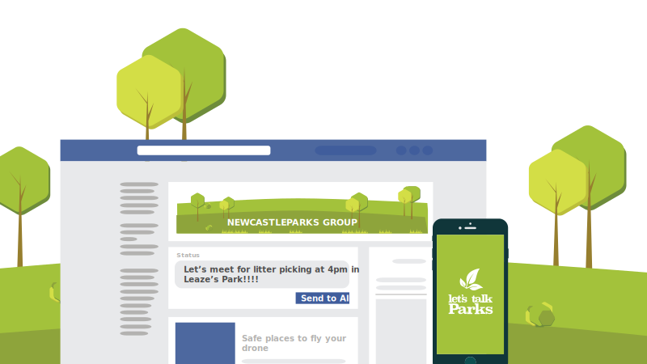

Coordinating all volunteers centrally would help to ensure that all parks were properly looked after and that work was distributed across the city. However, local park community groups have better knowledge of their local parks and are passionate about their local environments. But not all parks are supported by community groups.

Organising
 Should a Parks Charitable Trust coordinate volunteers across the city?
Should a Parks Charitable Trust coordinate volunteers across the city?
Log in to vote
How would you improve this or do it differently?
Share your ideas and opinions to shape the future of our parks!
Log in to comment
City Library Workshop
24/04/2017
0 0
Stephanie Mosley
21/04/2017
0 0
Stephanie Mosley
21/04/2017
0 0
Mark Ryan
21/04/2017
0 0
Martin Laban
20/04/2017
0 0
john blakemore
17/04/2017
+1 0
Allan Rowell
08/04/2017
0 0
Twitter
23/03/2017
0 0
Twitter
23/03/2017
+1 0
Twitter
23/03/2017
0 0
Dave Poste
22/03/2017
+1 0
Tyne Riverside Country Park Workshop
21/03/2017
0 0
Judy Olivier
15/03/2017
+1 0
Great North Museum Workshop
01/12/2016
+1 1